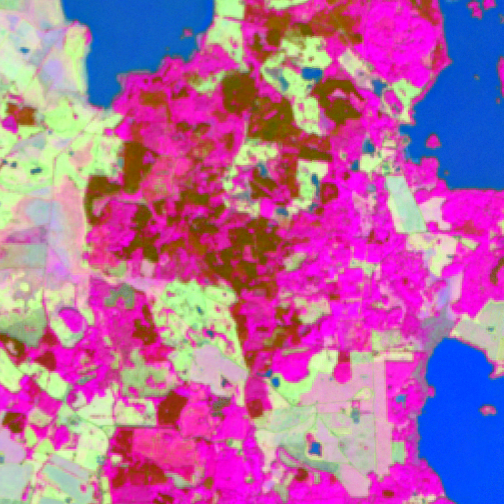
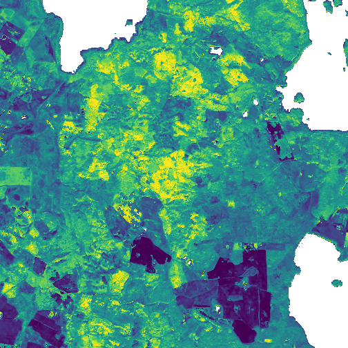
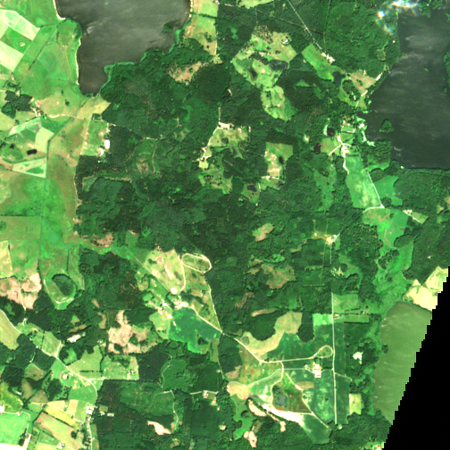
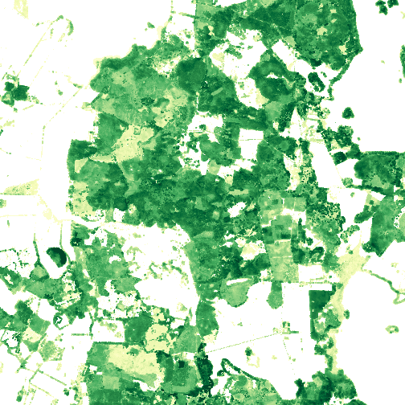
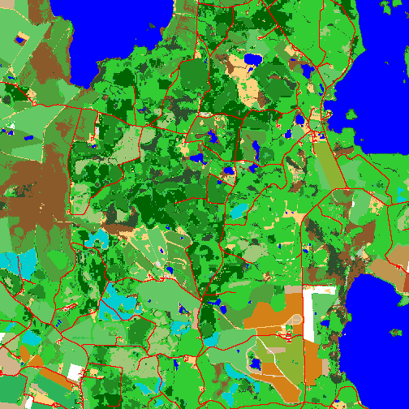
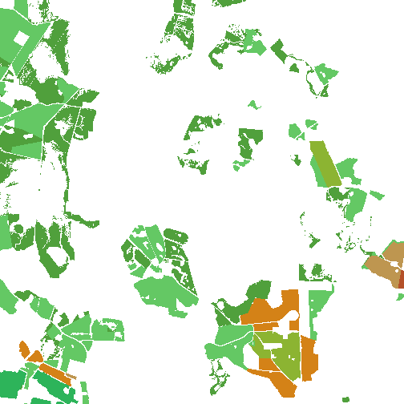
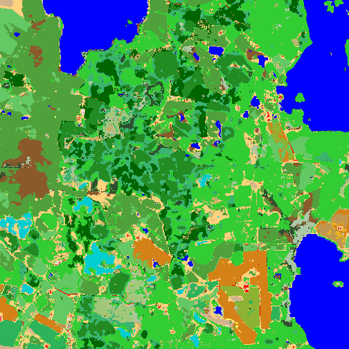
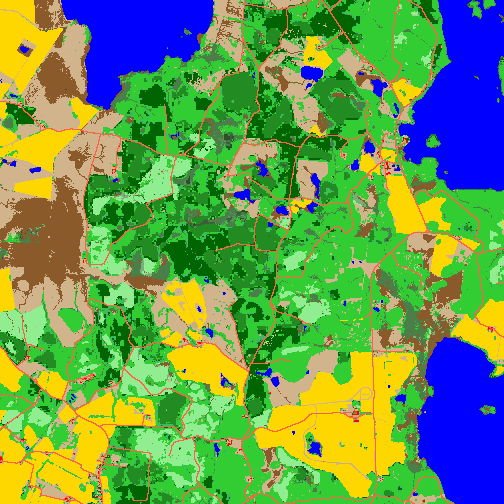

SVERIGE / HISTORISKA ÅR
Markanvändning och marktäcke 2017–2024.
Klicka i kartan och välj ett tillgängligt år. Varje karta täcker 5,04 × 5,04 km i 10 meters upplösning.
Konturen visar den färdiga kartans utbredning. Punkter visar förberedda platser.
SÅ SKAPAS DIN ÅRSKARTA
Från satellitdata till markklass
Varje årskarta klassas av TESSERA R4 i 10 meters upplösning. Modellen läser två sorters indata: sådant som följer det valda året och fasta stödlager som delas mellan åren. Exemplet nedan är en ruta på cirka 5 × 5 km i ett skogs- och odlingslandskap; den ingår inte i utvärderingsmängden.
1 · Följer det valda året



2 · Fasta stödlager

3 · Vad modellen lärde sig av


4 · Resultatet


Exemplets klassfärger följer träningsschemat. Din årskarta använder NMD 2023:s färger där klasserna motsvarar varandra, som i teckenförklaringen längre ner.
Visa datakällor och färgförklaring
Alla lager täcker modellens fönster på 504 × 504 pixlar. Höjdmodell, trädhöjd och växtsäsongens längd har en färgskala från 2:a–98:e percentilen i rutan; där värdet 0 betyder att inget finns (inga träd, ingen växtsäsong) är pixeln genomskinlig. Lagrens ursprung: MANIFEST.json.
TESSERA-embedding
TESSERA sammanfattar ett års satellitobservationer per pixel i 128 tal. Bilden visar de tre första
huvudkomponenterna som färg: områden med samma färg har liknande signatur över året. TESSERA R4 bygger på dessa
embeddings.
Källa: geotessera
Växtsäsongens längd
Antal dagar mellan växtsäsongens start och slut enligt Copernicus HR-VPP, som bygger på Sentinel-2. Fenologin
används på två sätt: som hjälpkanaler och, för modeller som läser Sentinel-2-bilder, för att välja datum för de
tre växtsäsongsbilderna i varje ruta. Där ingen växtsäsong finns (t.ex. vatten) eller data saknas är pixeln
genomskinlig.
Källa: Copernicus Land Monitoring Service, HR-VPP
- 60 dagar
- 105 dagar
- 150 dagar
- 195 dagar
- 240 dagar
Sentinel-2
Satellitbilden är en Sentinel-2-sommarbild med kontraststräckning för visning; den svarta kilen nere till höger
saknar data just det datumet, och modellerna använder flera datum.
Källa: ESA Copernicus Sentinel-2
Höjdmodell
Terränghöjd över havet från Copernicus DEM (30 m), inläst på rutans 10 m-rutnät. Den är en av modellernas
hjälpkanaler.
Källa: Copernicus DEM GLO-30
- 30 m
- 52.5 m
- 75 m
- 97.5 m
- 120 m
Trädhöjd
Trädhöjd ur Skogsstyrelsens laserskanningsbaserade skogsdata. Tillsammans med virkesvolym, grundyta och diameter
från samma källa är den en hjälpkanal. Där värdet är 0 (inga träd eller inga data) är pixeln genomskinlig.
Källa: Skogsstyrelsen, öppna geodata
- 0 m
- 7.5 m
- 15 m
- 22.5 m
- 30 m
Skogliga grunddata och markfukt
Virkesvolym, grundyta och diameter från Skogsstyrelsen och markfuktighet från SLU:s markfuktighetskarta är också
hjälpkanaler. De delas mellan åren och visas inte i exemplet.
Källa: Skogsstyrelsen; SLU Markfuktighetskarta
Träningsetikett
Etiketten modellerna tränas mot på nivå 2: NMD2023 som bas, med grödor från jordbruksskiftena och avverkningar ovanpå. Nivå 1 använder samma uppbyggnad med NMD2018 som bas; nivåerna beskrivs under metoden längre ner. Pixlar utan etikett är genomskinliga. Färgerna är desamma som för TESSERA R4.
Jordbruksskiften (LPIS)
Grödor på jordbruksskiften från Jordbruksverkets register, samma år som satellitbilderna. Grödkoderna slås ihop
till de grödklasser modellerna lär sig. Alla grödklasser i träningsetiketten kommer härifrån; resten av bilden är
genomskinlig.
Källa: Jordbruksverket, LPIS
- Korn
- Oljeväxter
- Slåttervall
- Bete
- Potatis
- Trindsäd
- Råg
Utförda avverkningar
Avverkningar som Skogsstyrelsen registrerat som utförda under rutans år eller de fem åren innan. Där NMD visar
skog blir de klassen hygge i träningsetiketten; annars behåller pixeln sin klass.
Källa: Skogsstyrelsen
- utförd avverkning, rutans år eller de fem åren innan
TESSERA R4
Modellkartan är den slutliga, fältkalibrerade modellens fulla klassutdata — fler klasser än de fem som utvärderas.
- Tallskog
- Granskog
- Lövskog
- Blandskog
- Sumpskog
- Tillfälligt ej skog
- Hygge
- Våtmark
- Öppen mark
- Buskdominerad mark
- Risdominerad mark
- Gräsdominerad mark
- Öppen mark utan vegetation
- Vete
- Korn
- Havre
- Råg
- Oljeväxter
- Trindsäd
- Majs
- Slåttervall
- Bete
- Potatis
- Sockerbetor
- Bebyggelse
- Vatten
NMD2023
Naturvårdsverkets Nationella Marktäckedata 2023 i showcasens NMD-färger. NMD2023:s nyare koder (finindelad öppen
våtmark och öppen mark, låg fjällskog, torvtäkt) visas som närmaste NMD2018-klass.
Källa: Naturvårdsverket, Nationellt Marktäckedata (NMD)
- Tallskog
- Granskog
- Lövskog
- Blandskog
- Temp. ej skog
- Sumpsk. tall
- Sumpsk. gran
- Sumpsk. löv
- Sumpsk. bland
- Sumpsk. temp
- Öpp. våtmark
- Åkermark
- Öpp. mark bar
- Öpp. mark veg.
- Byggnader
- Infrastruktur
- Vägar
- Sjöar
- Hav
HUR VÄL STÄMMER KARTAN? · FÖRHANDSVISNING
Fältvalidering mot Riksskogstaxeringen
Fältdata
Utvärderingsmängd
Jämförelse
Statistik
Hur väl stämmer marktäckekartor med vad som faktiskt finns på marken? Vi har jämfört modellernas kartor och Naturvårdsverkets NMD med Riksskogstaxeringens provytor från sju inventeringsår. I stora drag: både Prithvi-EO-2.0 och TESSERA stämmer oftare med fältbedömningen än NMD2023 — men bara när de tränas med fältkalibrerade etiketter. Exempelrutan ovan är samma typ av ruta men ingår inte i utvärderingen.
Visa metod och datakällor
Utvärderingsdesign
742 provyte-år per år 2018–2024 valdes med ett seedat, dokumenterat urval och låstes med en SHA-256-hash innan någon modell kördes; poängsättningen kontrollerar hashen innan den räknar. Modellerna, NMD2018 och NMD2023 jämförs parvis på samma provytor. Måttet är överensstämmelse i fem klasser — tallskog, granskog, lövskog, blandskog och övrigt (inklusive icke-skog). Osäkerheten skattas över oberoende 50 km-block och korrigeras för det totala antalet jämförelser. De provyte-år vars data tränade den fältkalibrerade läraren är uteslutna ur utvärderingen.
Studiens fyra steg
Studien bygger på öppna data; undantaget är Riksskogstaxeringens provytor, vars lägen är skyddade. Vilka indata en modell får beror på modellen.
- Indata. Satellitbilder: fyra Sentinel-2-bilder per ruta och år (hösten året innan och tre
bilder under växtsäsongen, tidsatta efter rutans fenologi); Sentinel-1-radar för de modeller som använder
radar. Hjälpkanaler: höjdmodell; trädhöjd, virkesvolym, grundyta och diameter; markfuktighet; växtsäsongens
start, slut, längd samt max- och minvärde. TESSERA: förberäknade årliga embeddings, 128 tal per pixel.
Källor: ESA Copernicus Sentinel-2 och Sentinel-1; Copernicus DEM GLO-30; Skogsstyrelsen; SLU Markfuktighetskarta; Copernicus HR-VPP; TESSERA (geotessera) - Etiketter. NMD2018 respektive NMD2023 som bas, med jordbruksgrödor och utförda avverkningar
ovanpå.
Källor: Naturvårdsverket; Jordbruksverket (LPIS); Skogsstyrelsen - Träning i fyra nivåer. (1) NMD2018-etiketter, (2) NMD2023-etiketter, (3) dessutom
fältkalibrerade skogsetiketter från en lärare tränad mot NFI-provytor, (4) dessutom trädslagsandelar.
Källor: Riksskogstaxeringen (SLU); NMD2023:s tilläggsskikt Trädslag - Utvärdering. 742 provyte-år per år 2018–2024, låsta innan modellerna kördes; jämförelse med
NMD2018 och NMD2023 på samma provytor.
Källa: Riksskogstaxeringen (SLU)
Att tänka på
Måttet är femklassig överensstämmelse över alla provytor; det visar inte ensamt att modellerna skiljer trädslag
bättre inom skog. Studien omfattar fler grundmodeller än de två som nämns här. Provytornas lägen är skyddade och
publiceras inte.
Designen är dokumenterad öppet:
frysningen,
modellkörningen och
poängsättningsjobbet.
Vad betyder året?
Året gäller TESSERA och HR-VPP. Trädhöjd, skogliga grunddata, markfukt och DEM är fasta stödlager som delas mellan åren.
Genomskinliga pixlar saknar användbara indata. Svart är modellklassen bakgrund (0). Modellens klassning är en skattning.
Teckenförklaring
Färger och benämningar följer NMD 2023 där klasserna motsvarar varandra. Sammanslagna klasser använder representativa färger. Jordbruksklasser och hygge är modellens egna tillägg.